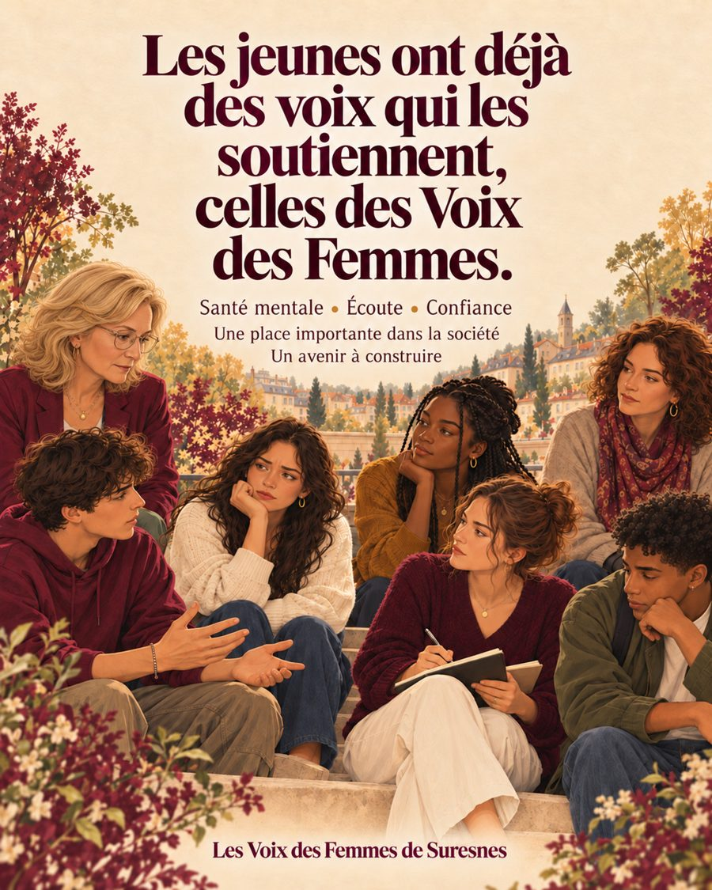
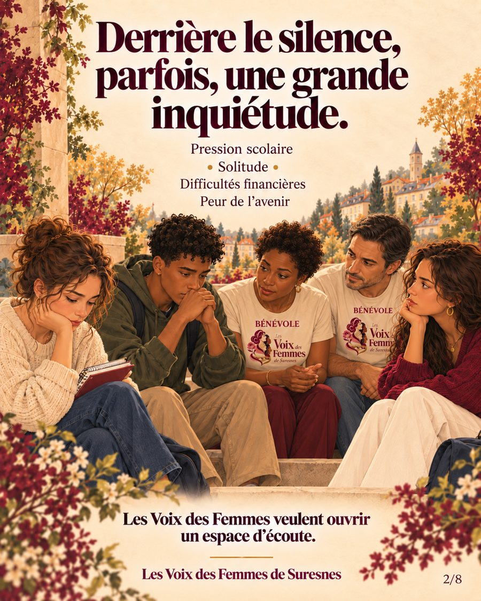
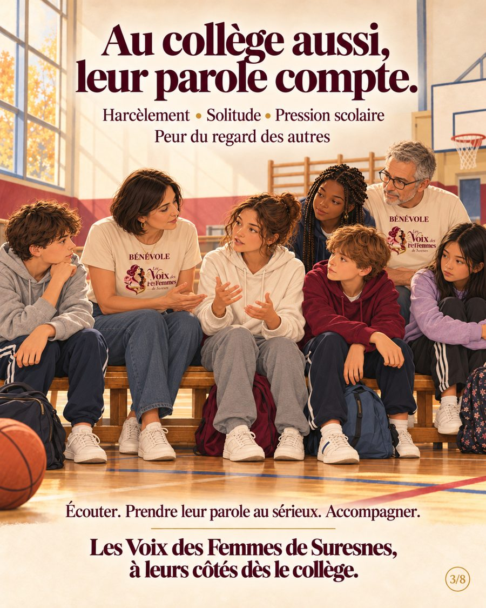
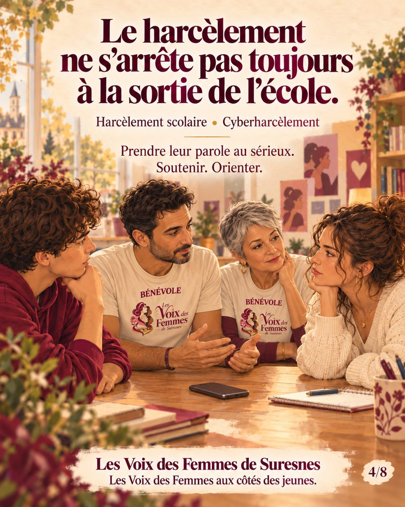
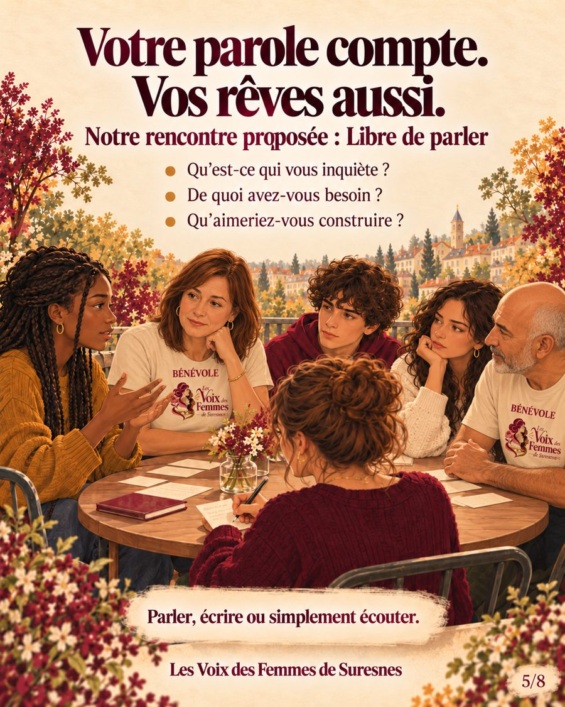
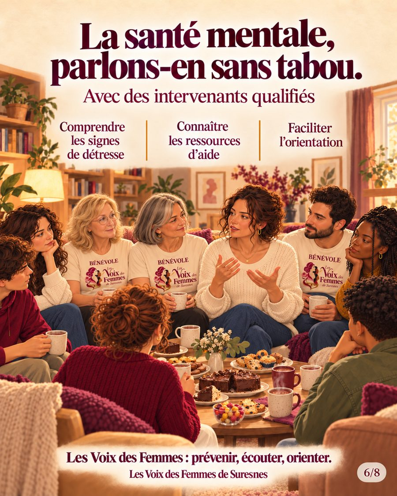
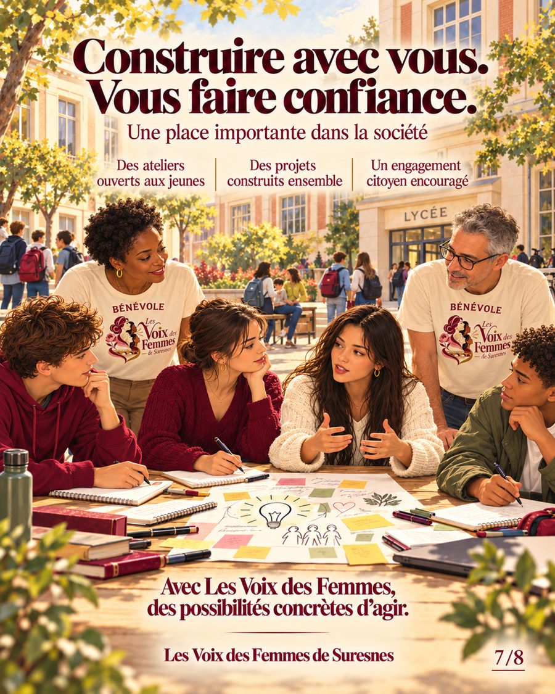
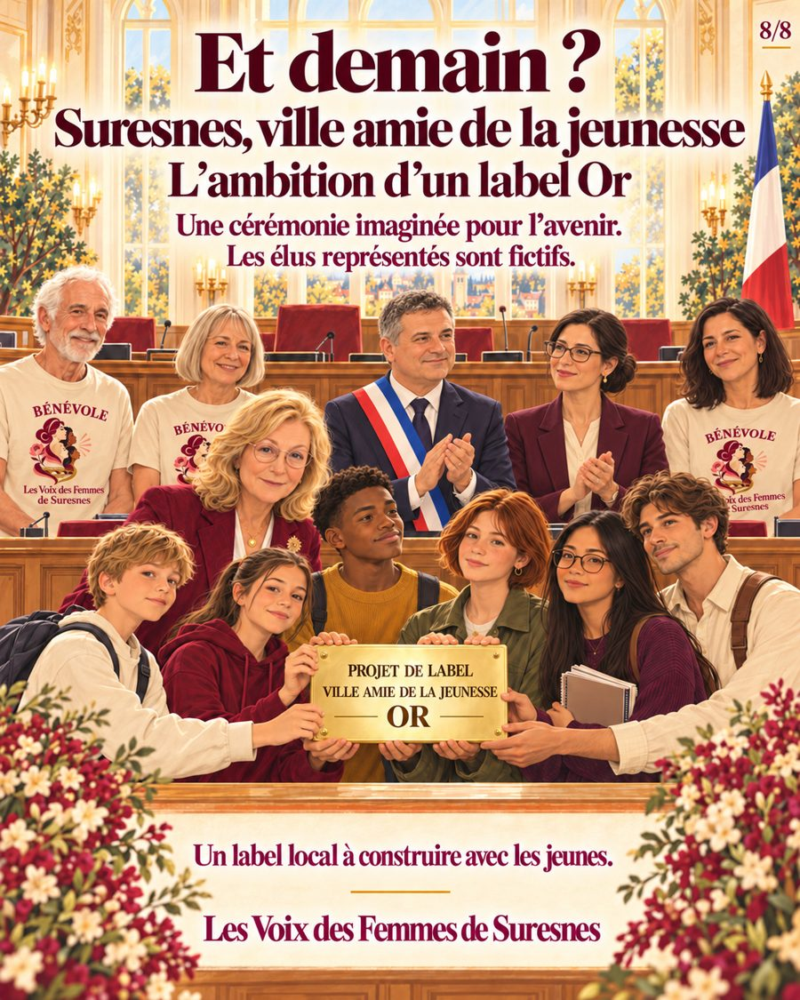

Écouter, soutenir, orienter, construire ensemble.

Santé mentale, écoute, confiance. Une place importante dans la société, un avenir à construire.

Pression scolaire, solitude, difficultés financières, peur de l’avenir. Les Voix des Femmes veulent ouvrir un espace d’écoute.

Harcèlement, solitude, pression scolaire, peur du regard des autres. Écouter. Prendre leur parole au sérieux. Accompagner.

Harcèlement scolaire, cyberharcèlement. Prendre leur parole au sérieux. Soutenir. Orienter.

Notre rencontre proposée : Libre de parler. Qu’est-ce qui vous inquiète ? De quoi avez-vous besoin ? Qu’aimeriez-vous construire ? Parler, écrire ou simplement écouter.

Avec des intervenants qualifiés : comprendre les signes de détresse, connaître les ressources d’aide, faciliter l’orientation.

Des ateliers ouverts aux jeunes, des projets construits ensemble, un engagement citoyen encouragé.

L’ambition d’un label Or : un label local à construire avec les jeunes. Il s’agit d’un projet imaginé pour l’avenir : ce label n’est pas obtenu et les élus représentés sur l’illustration sont fictifs.
3114 : numéro national de prévention du suicide, 24h/24, gratuit. 3018 : aide en cas de cyberharcèlement. 119 : enfance en danger. Pour parler avec nous, appelez le 06 44 89 55 36.